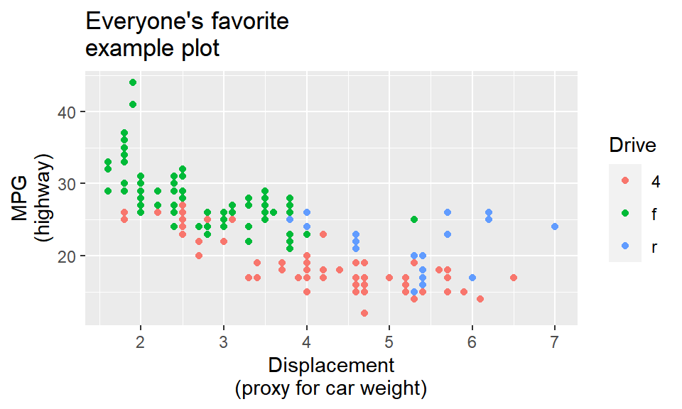
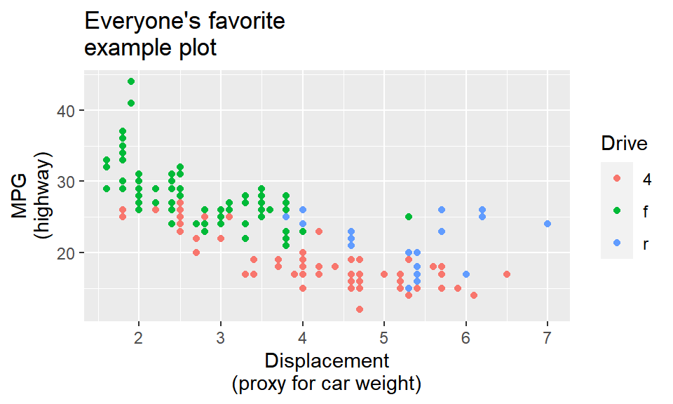

ggplot(data = mpg, mapping = aes(x = displ, y = hwy, color = drv)) +
geom_point() +
labs(
title = "Everyone's favorite\nexample plot",
x = "Displacement\n(proxy for car weight)",
y = "MPG\n(highway)",
color = "Drive"
)
Hi everyone!
Many of you had similar questions and I left lots of similar comments and tips on iCollege, so I’ve compiled the most common issues here. There are a bunch here, but they’re hopefully all useful.
This was a common problem with the LOTR data and it will be a problem with exercise 4 (and future assignments too)—categories on the x-axis often overlap when you knit your document. That’s because there’s not enough room to fit them all comfortably in a standard image size. Fortunately there are a few quick and easy ways to fix this, such as changing the width of the image (see below), rotating the labels, dodging the labels, or (my favorite!) automatically adding line breaks to the labels so they don’t overlap. This blog post (by me) has super quick examples of all these different (easy!) approaches.
If you don’t want to use the fancier techniques from the blog post about long labels, a quick and easy way to deal with longer text is to manually insert a linebreak yourself. This is super easy: include a \n where you want a new line:
ggplot(data = mpg, mapping = aes(x = displ, y = hwy, color = drv)) +
geom_point() +
labs(
title = "Everyone's favorite\nexample plot",
x = "Displacement\n(proxy for car weight)",
y = "MPG\n(highway)",
color = "Drive"
)
By default, R creates plots that are 7″×7″ squares:
library(tidyverse)
ggplot(data = mpg, mapping = aes(x = displ, y = hwy, color = drv)) +
geom_point()Often, though, those plots are excessively large and can result in text that is too small and dimensions that feel off. You generally want to have better control over the dimensions of the figures you make. For instance, you can make them landscape when there’s lots of text involved. To do this, you can use the fig.width and fig.height chunk options to control the, um, width and height of the figures:
```{r landscape-plot, fig.width=5, fig.height=3}
ggplot(data = mpg, mapping = aes(x = displ, y = hwy, color = drv)) +
geom_point()
```The dimensions are also reflected in RStudio itself when you’re working with inline images, so it’s easy to tinker with different values and rerun the chunk without needing to re-knit the whole document over and over again:
Because I’m a super nerd, I try to make the dimensions of all my landscape images be golden rectangles, which follow the golden ratio—a really amazing ancient number that gets used all the time in art and design. Check out this neat video or this one to learn more.
Basically, a golden rectangle is a special rectangle where if you cut it at a specific point, you get a square and a smaller rectangle that is also a golden rectangle. You can then cut that smaller rectangle at the magic point and get another square and another even smaller golden rectangle, and so on.
More formally and mathematically, it’s a rectangle where the ratio of the height and width of the subshapes are special values. Note how here the blue square is a perfect square with side lengths a, while the red rectangle is another smaller golden rectangle with side lengths a and b:
\[ \frac{a + b}{a} = \frac{a}{b} = \phi \]
## Warning in grid.Call.graphics(C_text, as.graphicsAnnot(x$label), x$x, x$y, :
## font family not found in Windows font database
It turns out that if you do the algebra to figure out that ratio or \(\phi\) (the Greek letter “phi,” pronounced as either “fee” or “fie”), it’s this:
\[ \phi = \frac{1 + \sqrt{5}}{2} \approx 1.618 \]
That’s all really mathy, but it’s really just a matter of using that 1.618 number with whatever dimensions you want. For instance, if I want my image to be 6 inches wide, I’ll divide it by \(\phi\) or 1.618 (or multiply it by 0.618, which is the same thing) to find the height to make a golden rectangle: 6 inches × 0.618 = 3.708 = 3.7 inches
R can even do the math for you in the chunk options:
```{r landscape-plot-golden, fig.width=6, fig.height=(6 / 1.618)}
ggplot(data = mpg, mapping = aes(x = displ, y = hwy, color = drv)) +
geom_point()
```If you can’t remember that the magic golden ratio \(\phi\) is 1.618 or the gross complicated \(\frac{1 + \sqrt{5}}{2}\), you can cheat a little and remember \(\frac{5}{3}\), which is 1.667, which is often close enough.
I don’t do this with all my figures, and I often have to fudge the numbers a bit when there are titles and subtitles (i.e. making the height a little taller so that the rectangle around just the plot area still roughly follows the golden ratio), but it makes nice rectangles and I just think they’re neat.
For bonus fun, if you draw a curve between the opposite corners of each square of the golden rectangles, you get something called the golden spiral or Fibonacci spiral, which is replicated throughout nature and art. Graphic designers and artists often make the dimensions of their work fit in golden rectangles and will sometimes even overlay a golden spiral over their work and lay out text and images in specific squares and rectangles. See this and this for some examples.
geom_bar() and geom_col()?In exercise 3, you made lots of bar charts to show the counts of words spoken in The Lord of the Rings movies. To do this, you used geom_col() to add columns to the plots. However, confusingly ggplot has another geom layer named geom_bar(), which you’d understandably think you could use to make a bar chart. If you tried using it, though, it probably didn’t work.
Both geom_col() and geom_bar() make bar graphs, but there’s a subtle difference between the two: with geom_col(), you have to specify both an x and a y aesthetic; with geom_bar(), you only specify an x aesthetic and ggplot automatically figures out the y for you.
Here’s a quick example using the mpg data. Let’s say you want to make a plot that shows the count of cars with different drives (front, rear, and four). With geom_col(), you’re in charge of calculating those totals first before plotting, typically with group_by() %>% summarize():
# Get a count of cars by drive
cars_by_drive <- mpg %>%
group_by(drv) %>%
summarize(total = n())
# Specify both x and y
ggplot(cars_by_drive, aes(x = drv, y = total)) +
geom_col()You can make that same plot with geom_bar() instead and let ggplot handle the counting:
# Use the full dataset and only specify x, not y
ggplot(mpg, aes(x = drv)) +
geom_bar()It seems like you’d always want to use geom_bar() since the code is so much shorter and you can outsource a lot of the work to ggplot—there’s no need to use group_by() and summarize() and do extra calculations! But that’s not necessarily the case!
Personally, I prefer to use geom_col() and do my own calculations anyway because it gives me more control over what is getting calculated. For instance, if I want to plot percentages instead of counts, it’s far easier to do that in a separate dataset than somehow hack geom_bar() into showing percents. Or if I want to group by multiple things, it’s easier to do that with group_by() instead of tricking geom_bar() into getting it right. Plus I can look at the intermediate cars_by_drive data before plotting to make sure everything was calculated correctly.
For instance, if I want to find the proportion of car drives across the two different years in the dataset, it’s a lot easier to create my own y variable with group_by() %>% summarize() and use geom_col() instead of fiddling around with the automatic settings of geom_bar():
cars_drive_year <- mpg %>%
# Make year a categorical variable instead of a number
mutate(year = factor(year)) %>%
group_by(drv, year) %>%
summarize(total = n()) %>%
# Group by year to get the proportions of drives within each year
group_by(year) %>%
mutate(prop = total / sum(total))
# Specify x and y and use geom_col()
ggplot(cars_drive_year, aes(x = year, y = prop, fill = drv)) +
geom_col(position = "dodge")
read_csv() vs. read.csv()?In all the code I’ve given you in this class, you’ve loaded CSV files using read_csv(), with an underscore. In lots of online examples of R code, and in lots of other peoples’ code, you’ll see read.csv() with a period. They both load CSV files into R, but there are subtle differences between them.
read.csv() (read dot csv) is a core part of R and requires no external packages (we say that it’s part of “base R”). It loads CSV files. That’s its job. However, it can be slow with big files, and it can sometimes read text data in as categorical data, which is weird (that’s less of an issue since R 4.0; it was a major headache in the days before R 4.0). It also makes ugly column names when there are “illegal” columns in the CSV file—it replaces all the illegal characters with .s
R technically doesn’t allow column names that (1) have spaces in them or (2) start with numbers.
You can still access or use or create column names that do this if you wrap the names in backticks, like this:
mpg %>%
group_by(drv) %>%
summarize(`A column with spaces` = mean(hwy))
## # A tibble: 3 × 2
## drv `A column with spaces`
## <chr> <dbl>
## 1 4 19.2
## 2 f 28.2
## 3 r 21read_csv() (read underscore csv) comes from {readr}, which is one of the 9 packages that get loaded when you run library(tidyverse). Think of it as a new and improved version of read.csv(). It handles big files a better, it doesn’t ever read text data in as categorical data, and it does a better job at figuring out what kinds of columns are which (if it detects something that looks like a date, it’ll treat it as a date). It also doesn’t rename any columns—if there are illegal characters like spaces, it’ll keep them for you, which is nice.
Moral of the story: use read_csv() instead of read.csv(). It’s nicer.
By now you’ve seen ominous looking red text in R, like 'summarise()' has grouped output by 'Gender'. You can override using the '.groups' argument or Warning: Removed 2 rows containing missing values, and so on. You might have panicked a little after seeing this and thought you were doing something wrong.
Never fear! You’re most likely not doing anything wrong.
R shows red text in the console pane in three different situations:
Error in ggplot(...) : could not find function "ggplot", it means that the ggplot() function is not accessible because the package that contains the function (ggplot2) was not loaded with library(ggplot2) (or library(tidyverse), which loads ggplot2). Thus you cannot use the ggplot() function without the ggplot2 package being loaded first.Warning: Removed 2 rows containing missing values (geom_point). R will still produce the scatterplot with all the remaining non-missing values, but it is warning you that two of the points aren’t there.read_csv(). These are helpful diagnostic messages and they don’t stop your code from working. This is what 'summarise()' has grouped output by 'Gender'... is—just a helpful note.Remember, when you see red text in the console, don’t panic. It doesn’t necessarily mean anything is wrong. Rather:
In general, you’ll want to try to deal with errors and warnings, often by adjusting or clarifying something in your code. In your final knitted documents, you typically want to have nice clean output without any warnings or messages. You can fix these warnings and messages in a couple ways: (1) change your code to deal with them, or (2) just hide them.
For instance, if you do something like this to turn off the fill legend:
# Not actual code; don't try to run this
ggplot(data = whatever, aes(x = blah, y = blah, fill = blah)) +
geom_col() +
guides(fill = FALSE)You’ll get this warning:
## Warning: The `<scale>` argument of `guides()` cannot be `FALSE`. Use "none"
## instead as of ggplot2 3.3.4.
## This warning is displayed once every 8 hours.
## Call `lifecycle::last_lifecycle_warnings()` to see where this warning was
## generated.You’ll still get a plot and the fill legend will be gone and that’s great, but the warning is telling you that that code has been deprecated and is getting phased out and will eventually stop working. ggplot helpfully tells you how to fix it: use guides(fill = "none") instead. Changing that code removes the warning and everything will work just fine:
# Not actual code; don't try to run this
ggplot(data = whatever, aes(x = blah, y = blah, fill = blah)) +
geom_col() +
guides(fill = "none")In other cases, though, nothing’s wrong and R is just being talkative. For instance, when you load {tidyverse}, you get a big wall of text:
library(tidyverse)
## ── Attaching core tidyverse packages ─────────────────── tidyverse 2.0.0 ──
## ✔ dplyr 1.1.2 ✔ readr 2.1.4
## ✔ forcats 1.0.0 ✔ stringr 1.5.0
## ✔ ggplot2 3.4.2 ✔ tibble 3.2.1
## ✔ lubridate 1.9.2 ✔ tidyr 1.3.0
## ✔ purrr 1.0.1
## ── Conflicts ───────────────────────────────────── tidyverse_conflicts() ──
## ✖ dplyr::filter() masks stats::filter()
## ✖ dplyr::lag() masks stats::lag()
## ℹ Use the conflicted package to force all conflicts to become errorsThat’s all helpful information—it tells you that R loaded 9 related packages for you ({ggplot2}, {dplyr}, etc.). But none of that needs to be in a knitted document. You can turn off those messages and warnings using chunk options:
```{r load-packages, warning=FALSE, message=FALSE}
library(tidyverse)
```The same technique works for other messages too. In exercise 3, for instance, you saw this message a lot:
## `summarise()` has grouped output by 'Gender'.
## You can override using the .groups` argument.That’s nothing bad and you did nothing wrong—that’s just R talking to you and telling you that it did something behind the scenes. When you use group_by() with one variable, like group_by(Gender), once you’re done summarizing and working with the groups, R ungroups your data automatically. When you use group_by() with two variables, like group_by(Gender, Film), once you’re done summarizing and working with the groups, R ungroups the last of the variables and gives you a data frame that is still grouped by the other variables. So with group_by(Gender, Film), after you’ve summarized stuff, R stops grouping by Film and groups by just Gender. That’s all the summarise() has grouped output by... message is doing—it’s telling you that it’s still grouped by something. It’s no big deal.
So, to get rid of the message in this case, you can use message=FALSE in the chunk options to disable the message:
```{r lotr-use-two-groups, message=FALSE}
lotr_gender_film <- lotr %>%
group_by(Gender, Film) %>%
summarize(total = sum(Words))
```